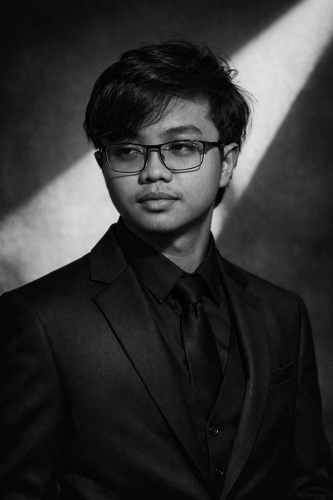
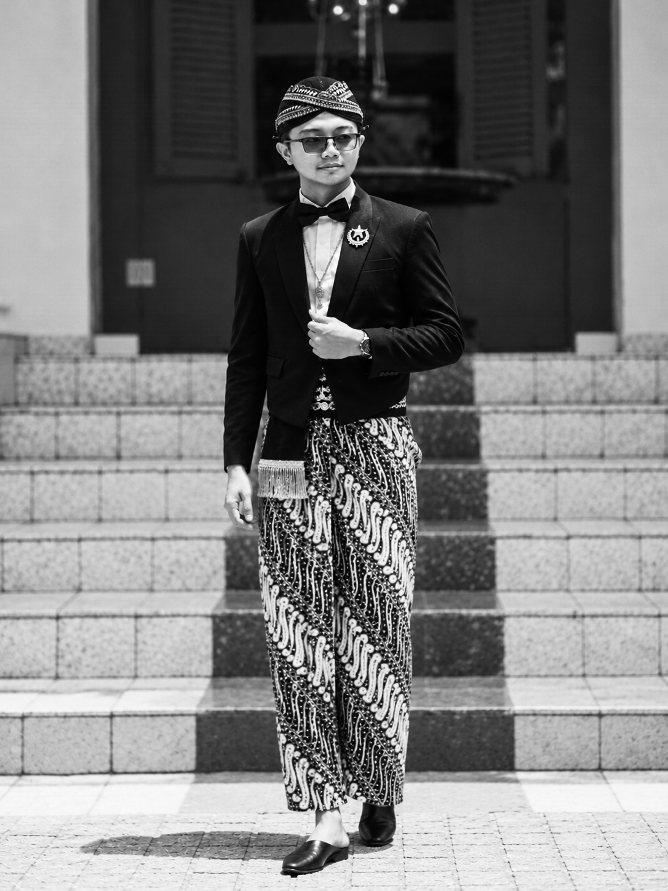

Graphic Design
Desain poster, MMT, backdrop, dan Q card untuk acara.
Curriculum Vitae 2026
Mahasiswa S-1 Sejarah|Media & Dokumentasi|Pelatih Rebana
Universitas Diponegoro, Semarang.


Belajar sejarah, berorganisasi, dan berkarya lewat media.
Saya Mochammad Hisyam Aflahuddin, mahasiswa yang memiliki pengalaman dalam dunia kerja, organisasi, dan kepanitiaan, dengan kemampuan komunikasi dan kerja tim yang baik. Saya memiliki semangat tinggi untuk terus belajar, mengeksplorasi hal baru, serta mengembangkan diri.
Di bidang media, saya terbiasa merancang desain, mengabadikan foto dan video kegiatan, serta mengoperasikan siaran langsung untuk acara kampus dan pesantren.
Saat ini saya menempuh S-1 Sejarah di Universitas Diponegoro, setelah menempuh pendidikan di pesantren tahfidz sejak 2018.
Kemampuan yang saya pelajari dan terapkan lewat pekerjaan, organisasi, dan kepanitiaan.
Desain poster, MMT, backdrop, dan Q card untuk acara.
Membuat video dokumentasi kegiatan dan menyuntingnya.
Mengabadikan foto dan mengarsipkan dokumentasi kegiatan.
Mengoperasikan OBS untuk keperluan siaran langsung.
Bekerja lintas divisi dalam berbagai kepanitiaan dan organisasi.
Pernah menjadi Wakil Ketua Pelaksana dan pengurus harian pesantren.
Pelatih Rebana di pesantren dan UKM Rebana Universitas Diponegoro.
Merekap, mengarsipkan, dan mendigitalisasi dokumen.
Karya-karya saya dikumpulkan dalam satu folder Google Drive.
Buka folder untuk melihat seluruh karya, atau tampilkan pratinjaunya langsung di halaman ini.
Jika pratinjau meminta login atau tampil kosong, buka folder lewat tombol “Buka di Google Drive”.
Pendidikan, pengalaman kerja, organisasi, dan kepanitiaan.
Aplikasi yang saya gunakan sehari-hari.
Mari terhubung.
Situs ini dibuat hanya untuk melihat CV dan pengalaman saya. Untuk pertanyaan atau silaturahmi, hubungi saya lewat kanal berikut, atau unduh CV lengkap.
Unduh CV (PDF)